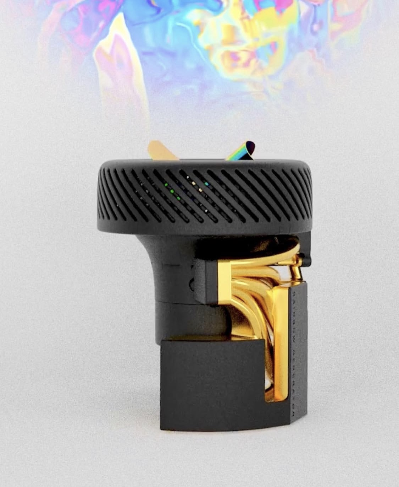

Planche 19 · Luminaire cinétique, prototype
EX P1
EX P1 est le prototype de K1 avant miniaturisation : le démonstrateur de l'effet visuel, et le banc d'épreuve de l'électronique et des engrenages mécaniques.
Un projecteur puissant, composé d'un moteur, d'un jeu d'engrenages à plusieurs étages, d'un micro-ordinateur, d'un ventilateur et d'un circuit d'air qui traverse tous les composants. Sa forme s'inspire du monde de la science-fiction, au style à la fois futuriste et organique. Il crée une lumière mouvante et colorée, projetant une chorégraphie hypnotique et inédite.
